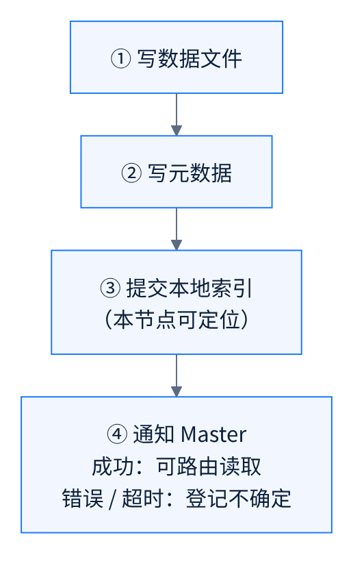

KV Cache 已经写进 SSD，为什么其他节点还可能读不到？
摘要：数据文件、本地索引、Master 登记是三个不同层次。通知 NotifyOffloadSuccess 返回错误或超时时，本地已能定位这份副本，其他节点却不一定能读到；返回值只能证明这次 RPC 没成功，不能区分 Master 未执行还是已执行而响应丢失。
Mooncake 的 KV Cache 下沉数据已经写进本地 SSD：bucket 的数据文件、元数据文件都在，本地 object_bucket_map_ 也已提交。接下来要通知 Master 登记这份磁盘副本，通知却返回错误或超时。
在分布式缓存里，完成文件写入只是其中一步。本地索引必须能定位它，Master 也必须知道它已经可用；这次本地索引已经提交，不确定的是 Master 登记。本篇只跟 LOCAL_DISK 的这一条下沉路径，看通知出错当时，不同位置分别能确认什么。
下沉通常是增加副本
上一篇提到，有些策略会先下沉、再回收内存。这里把动作拆开看。
下沉，指把数据写入 SSD，并建立相应磁盘副本；淘汰，指在满足条件时回收某份副本，常见目标是内存空间；提升（promotion），则是需要时重新建立内存副本。
因此，下沉写入成功并完成 Master 登记后，可能出现内存与磁盘副本共存的阶段。但下沉不等于立即删除内存，磁盘命中也不等于每次都要提升。

图注：下沉成功后内存与磁盘副本可能共存；淘汰内存副本后只剩磁盘副本；提升是按需动作，不是每次磁盘命中都必须执行。
写入与通知的顺序
下沉的物理单位是 bucket，不是单个对象。每个 bucket 有两个文件：<bucket_id>.bucket 存数据，<bucket_id>.meta 存索引。写入顺序是数据先、元数据后。
BatchOffload 在写完后先提交本地索引：object_bucket_map_ 和 buckets_ 已经能在本节点定位这些 key，然后才调用 complete_handler 通知 Master。
本地索引先于 Master 通知，是因为 Master 一旦把读请求指向本节点，BatchLoad 必须能立刻在 object_bucket_map_ 里查到 key。否则会出现“目录说能读，存储节点却找不到”的窗口。

图注：写入顺序是先写数据文件、元数据文件，再提交本地索引，随后通知 Master。图中实线表示收到成功响应、Master 登记结果已确认；通知错误或超时时，本节点可以确认本地索引已提交，但仅凭超时无法判断 Master 是否已登记。可路由读取不等于掉电持久，持久性见下文。
出错当时，四个位置各能确认什么
通知 Master 出现异常时，先不要用一句“下沉失败”概括。把两种情况并排看：
| 观察位置 | 请求未执行 | 已执行、响应丢失 |
|---|---|---|
| 本地数据文件与索引 | 已就绪，本节点能定位 | 已就绪，本节点能定位 |
| Master 记录 | 没有这次 LOCAL_DISK 副本 | 可能已有；返回值不能确认 |
| 其他 Client 查询 | 查不到这份磁盘副本 | 可能查到，取决于是否已登记 |
| 通知调用方 | 只知 RPC 未成功 | 只知 RPC 未成功，无法区分 |
表里的“其他 Client 能否查到”只针对这次新登记的磁盘副本。对象整体是否仍可读，还取决于 K 是否已有其他有效副本；不要把一次磁盘副本登记异常直接写成整个 key 不可读。
storage_backend.cpp 在 complete_handler 返回非 OK 时，日志写的是 Master was NOT notified，然后调用 RollbackCommittedBucket：删除本地索引、等待已经开始的本地读取结束、再删除磁盘文件。
这段回滚逻辑适用于“请求确实没有到达 Master”的情况。但一个非 OK 结果也可能来自请求已经发出后的超时或连接中断。此时客户端只知道这次 RPC 没有拿到成功响应，不能区分“Master 没执行”与“Master 执行了，但响应丢了”。
分析（推断）：如果 Master 实际登记成功，而客户端按“未通知”回滚并删除了文件，Master 就可能向其他 Client 发布一个本节点已经无法读取的副本。这是从当前代码路径推导出的风险，不是已在生产验证的行为；源码注释的假设是“通知失败即未登记”。
反过来，如果客户端不回滚，只保留本地文件和索引，Master 又没有登记，这份副本就是“本地能读、集群目录不知道”的幽灵副本。两个方向都需要额外的对账信息，不能只靠这次通知的返回值判断。
这里说的是 NotifyOffloadSuccess 这个 RPC 本身的异常。单个 key 写失败走的是另一条明确路径：失败元数据用 data_size = -1 作为 NACK，Master 看到负值后清理任务、不新增副本。NACK 明确表达了失败；RPC 超时则不明确。
回滚、重启扫描与重新注册，各修哪一层
回滚修的是本地层。RollbackCommittedBucket 删除索引、等待在途读取、删除文件，目标是避免留下本地可读但 Master 不知道的副本。它不能修复“Master 已经登记”的另一半。
重启扫描修的也是本地层。Init 遍历 .meta，校验后加载；再扫 .bucket，删掉没有 .meta 的孤儿文件。它可以从 .meta 重建本地索引；从这条 Init 路径看，没有主动核对 Master 目录的步骤，也不会自动解决“Master 记得、本地已回滚”的竞态。
重新注册处理的是另一种情况：Heartbeat 收到 SEGMENT_NOT_FOUND 后，client 重新挂载本地段，并异步调用 ReRegisterOffloadedObjects，从 .meta 重新向 Master 报告副本。它覆盖的是“Master 忘了这个段/注册”，不等价于修复上面那个响应丢失窗口。
这三个动作层次不同：回滚清理本地提交，重启扫描重建本地索引，重新注册重建 Master 侧的副本记录。把它们都说成“恢复机制”，会掩盖各自能证明的范围。
文件存在，不足以证明掉电持久性
进程重启、机器掉电、磁盘故障，是不同的验证场景。
数据文件写完，不表示缓存已经刷到稳定介质；使用 O_DIRECT，也不自动等价于完整的掉电持久化保证。开启 USE_URING 时，数据写入后还要 datasync 才写元数据；非 uring 回退路径只做 vector_write，没有显式 sync。于是可能出现 .meta 在、数据块在掉电后损坏的情况。
还需要核对数据、元数据文件、目录以及底层设备的同步行为。对于可重算 KV Cache，这些取舍可以根据成本决定，但系统文档应准确说明承诺。
总结
LOCAL_DISK 下沉完成、但通知 Master 出错时，本地已能定位这份副本，集群目录却不一定知道。关键区分是：RPC 确定未执行，还是 Master 已执行而响应丢失；仅凭返回值无法判断后者。
后续动作修的是不同层：回滚清理本地提交，重启扫描重建本地索引，重新注册重建 Master 侧记录。它们都不能单独消除“已登记但本地回滚”或“本地有、Master 不知道”的窗口。本篇只讨论 LOCAL_DISK bucket 路径；其他磁盘或 DFS 路径不能直接套用，文件存在也不等于掉电持久。
源码延伸：FileStorage、存储后端、offload、promotion 与重新注册。版本基线为 v0.3.13.post1。